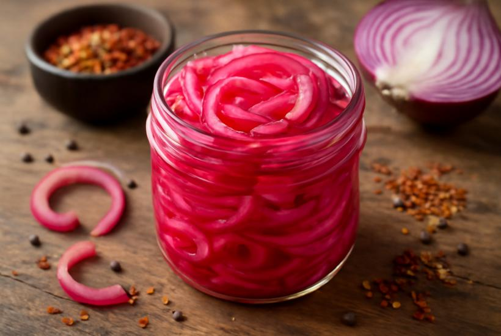

Return to Home
Pickled Red Onions

Description
Did you enjoy that pulled pork recipe? Want to know
what would make it even better? You're looking at it, baby.
These pickled red onions will make your Grandma proud! Unless
she doesn't like onions, then you're on your own.
Ingredients
- Two red onions
- Water
- White vinegar
- Two garlic cloves (whole)
- Black pepperconrs (whole)
- Sugar
Directions
- Thinly slice your red onions.
- On a stovetop over medium heat, combine equal parts
water and vinegar.
- Add sugar. Heat and stir until disolved and nearly boiling.
- Stuff red onions into a mason jar.
- Place some black peppeercorns and the peeled garlic
cloves into the jar with the onions.
- Pour the hot water/vinegar mixture into the jar.
Completely cover the onions.
- Let cool on kitchen counter. Can last in the fridge
for up to 2-3 weeks.
- Enjoy!